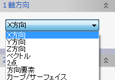

Evo.Shipのいくつかのコマンドで使用される方向入力ダイアログでは以下の方法で入力します。
- X,Y,Z方向
ワーク座標系の座標軸方向を指定します。

- ベクトル
エディットボックスにワーク座標系におけるベクトル値を入力します。

- 方向要素選択
平面の法線方向、直線（カーブ、エッジ）方向、軸方向、座標系の軸方向を選択することができます。

- ２点（始終点）
２点で定義される方向です。点の選択方法は点入力と同様です。

- カーブ（接線、曲率方向),サーフェイス(法線方向)
カーブ、サーフェイス上の方向を取得する点を選択します。点の選択方法は点入力と同様です。
カーブ上の点を選択した場合は、接線、曲率方向の選択をします。